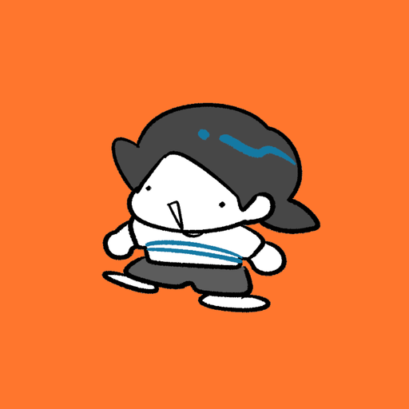
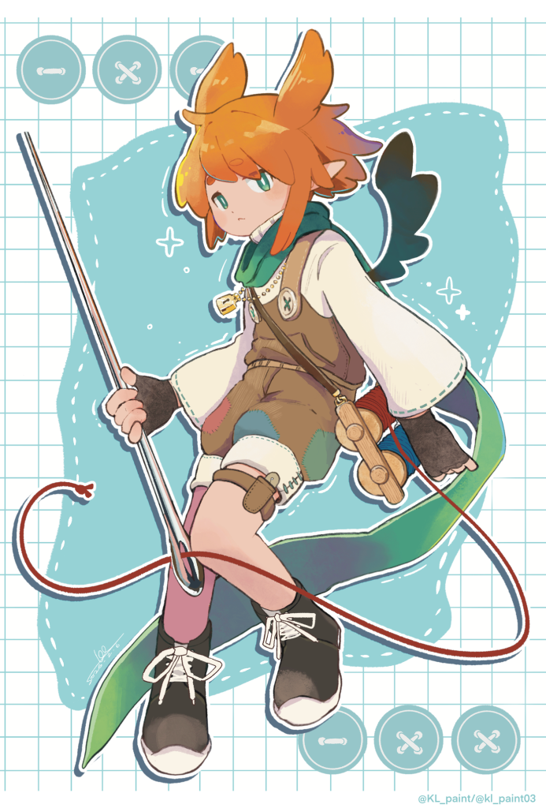

KL(けーえる)

KL(けーえる)
わが部長～～～！！
イラストがおしゃれ、さすが部長。
mail: N/A
Originals

ローズ
"……服の破れ目から世界の裂け目まで、何でも縫って差し上げます"
"救世主？なに、ただの仕事だよ。頼まれてやっただけ。"
特別な糸と針を使って、平行世界を跨ぐ、破れた結界を縫う職人
過去は悪魔だったが、罰として亜空間に投げられ、今いる世界に落ちる、友人(？)に恵まれてなんとか生きている
基本マイペースで屁理屈が多い、締切前日や危険な状態になると動くが、出来はプロ顔負け
親しい仲は一応大切にする